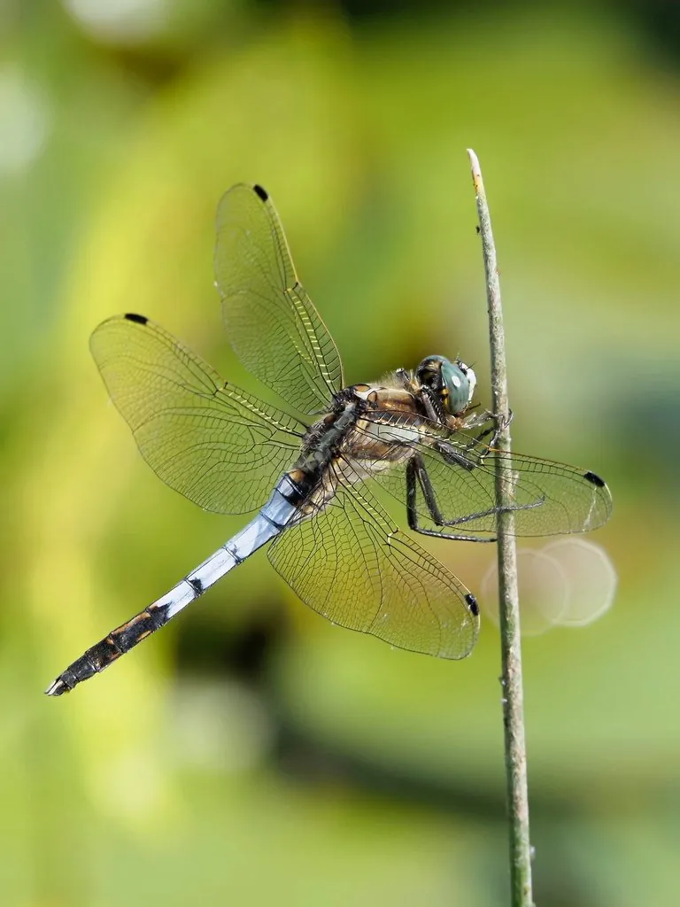

昆虫 · 动物界
白尾灰蜻 Orthetrum albistylum

腹部带灰白色粉末、尾端有白色附器的蜻蜓，常见于池塘和水田边，雄虫体色偏灰蓝，是中国常见的蜻蜓之一。
- 分类
- 门节肢动物门纲昆虫纲目蜻蜓目科蜻科属灰蜻属
- 栖息环境
- 池塘、水田、沟渠与湖泊边缘，常停在水边植物上
- 地理分布
- 中国大部分地区、日本、朝鲜半岛和亚洲其他地区
- 保护级别
- 暂无评估；湿地指示物种
物种志
白尾灰蜻成虫体长约 4.5–5 cm，翅展约 8 cm，雄虫胸部带灰蓝色或灰白色粉末，腹部黑色，后几节也覆有灰白色粉末，尾端有白色的附属器，因此名白尾；雌虫体色偏黄褐，腹部有黑色纵纹。
它生活在池塘、水田、沟渠和湖泊边缘，成虫常停在水边植物和地面上，也会飞到草地和路旁捕食小飞虫，雌虫点水产卵，幼虫生活在水中，捕食水生小动物。白尾灰蜻分布在中国大部分地区、日本、朝鲜半岛和亚洲其他地区，是东亚常见的蜻蜓。它对水质和环境变化较敏感，可作为湿地水质的指示生物，观察蜻蜓是了解湿地生态的简单方式。
形态与习性
- 食性捕食蚊蝇等小飞虫；幼虫捕食水生小动物
- 体长约 4.5–5 cm，翅展约 8 cm
- 识别雄虫体表有灰白色粉末，尾端有白色附器
- 习性常停在水边植物和地面上，雌虫点水产卵
- 分布中国大部分地区、日本和朝鲜半岛
趣味知识
- 白尾灰蜻的尾部有白色附属器，名字由此而来。
- 雄虫体表像蒙了一层灰白色的粉，显得灰扑扑的。
- 它常停在水边的枯枝上，是观察蜻蜓的好对象。